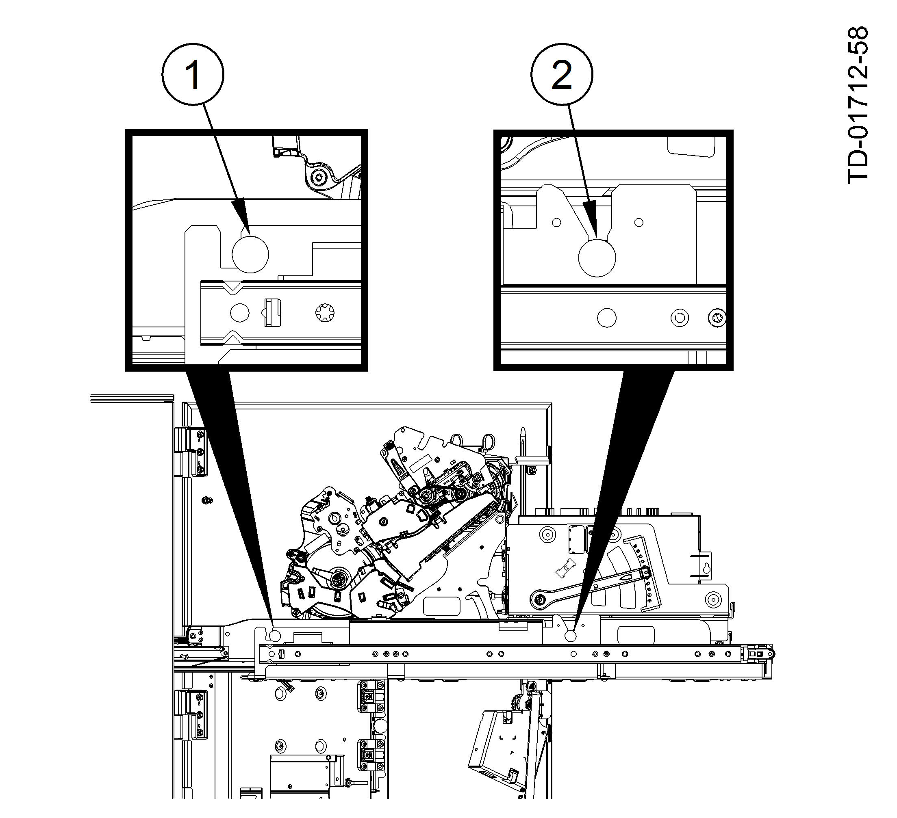

Perform the following steps to remove the TP20 form printer in one piece.
NOTICE
Although it should have already been removed, make sure the TP20 shipping bracket has been removed from the front of the printer. Refer to the DN Series™ 450 Through-the-Wall Walk-up System Installation Manual (01750331827).
WARNING
The TP20 form printer is large and awkward to remove in one piece, it is possible to remove FRU subassemblies of the printer (Removal by FRU Subassembly).
Disconnect the USB and power cables from the forms printer.
Flip the cable cover back up and secure it with the two screws that were previously removed.
WARNING
Make sure that you flip up the cable cover and secure it in place with screws. Otherwise TP20 form printer wide single feed assembly (printer head) will fall out if you lift the printer out of the system.
Lift up the form printer to disengage the rear alignment pin from the printer combination tray (Alignment Pins ).
Alignment Pins
1
Rear alignment pin
2
Front alignment pin
Lift up the form printer so that the front alignment pin disengages from the printer combination tray (Alignment Pins ).
Remove the form printer from the system.
Because the form printer is large and awkward to remove in one piece, it is possible to remove FRU subassemblies of the printer. Refer to Removal by FRU Subassembly.